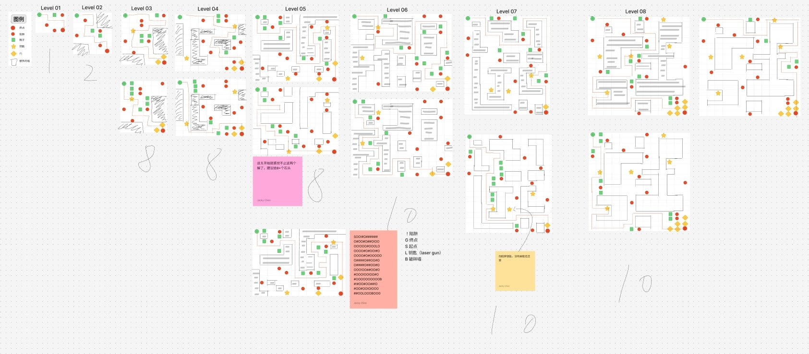
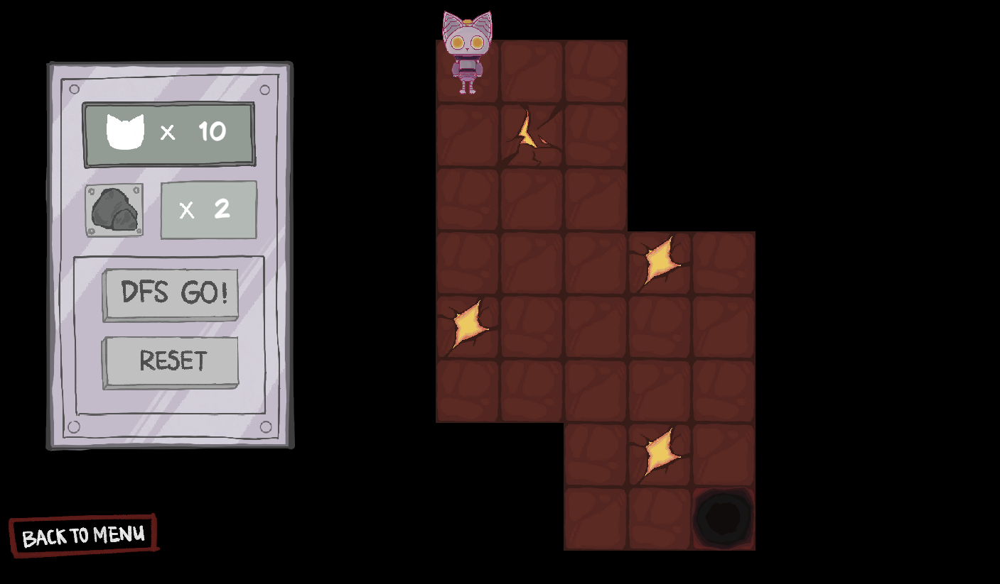

Play it now on Itch.io
For our Ludum Dare entry, the theme was "depth." Depth, depth—what does it really mean?
We drew inspiration from deep learning: a robot using a neural algorithm to find its way; a harrowing descent through the circles of hell; a mad scientist; a death god working overtime. Oh my—could anything capture "depth" more completely?
In this Game Jam, I took on the dual responsibilities of shaping the story and building the gameplay logic. My core contributions included:
Before implementing the stages in the engine, I mapped out the entire progression system on a whiteboard grid. This allowed me to visualize the placement of obstacles, test algorithmic pathing, and verify that multiple solution branches were viable for the player.

Fig 1: Grid-based level design scratch, mapping out mechanics and pathing from Level 01 up to Level 08+.
Here is how the conceptual grids and narrative elements came together in the final playable build. Players must carefully guide the AI core through the procedurally generated labyrinths using depth-first search mechanics.

Fig 2: In-game screenshot showcasing the finalized UI, grid mechanics, and art style.